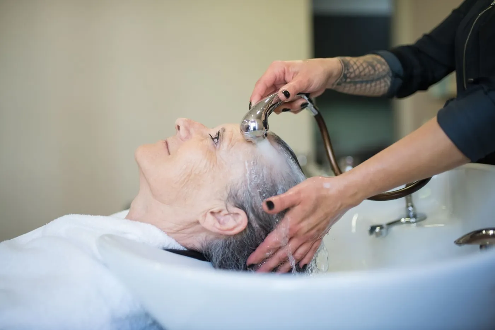

Здорове волосся починається зі шкіри голови. Пілінг допомагає прибрати те, що звичайний шампунь не завжди змиває.
Що дає пілінг
За словами дерматологів, яких цитує видання Prevention, відлущування шкіри голови прибирає бруд, надлишок себуму, відмерлі клітини шкіри та залишки засобів для укладки, які можуть подразнювати шкіру. Воно допомагає звільнити протоки сальних залоз - це сприяє тому, що волосся виглядає м'яким і блискучим.
Дерматолог Джошуа Цайхнер наголошує: періодичне використання делікатного відлущувального засобу допомагає прибрати таке нашарування.
Механічний чи хімічний
- Механічні - скраби та шампуні з дрібними частинками (наприклад, морська сіль або вугільний порошок).
- Хімічні - наприклад, саліцилова кислота в шампунях від лупи: вона делікатно відлущує і зменшує запалення.
Як часто
Дерматолог Гері Голденберг радить скраб приблизно раз на тиждень і зменшити частоту, якщо шкіра реагує. Головне - спостерігати, як реагують шкіра та волосся.
У студії пілінг можна додати до будь-якої процедури: 500-800 грн.
Стаття має ознайомчий характер і не замінює консультацію лікаря. Якщо маєте проблеми зі шкірою голови, алергію чи хронічні захворювання, порадьтеся з лікарем перед процедурою.